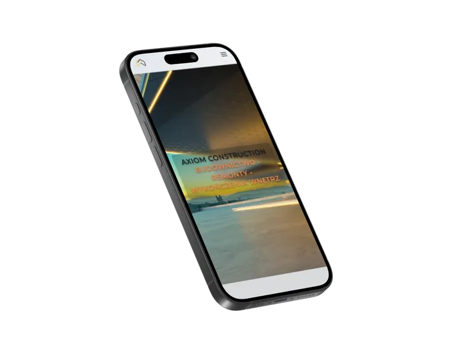
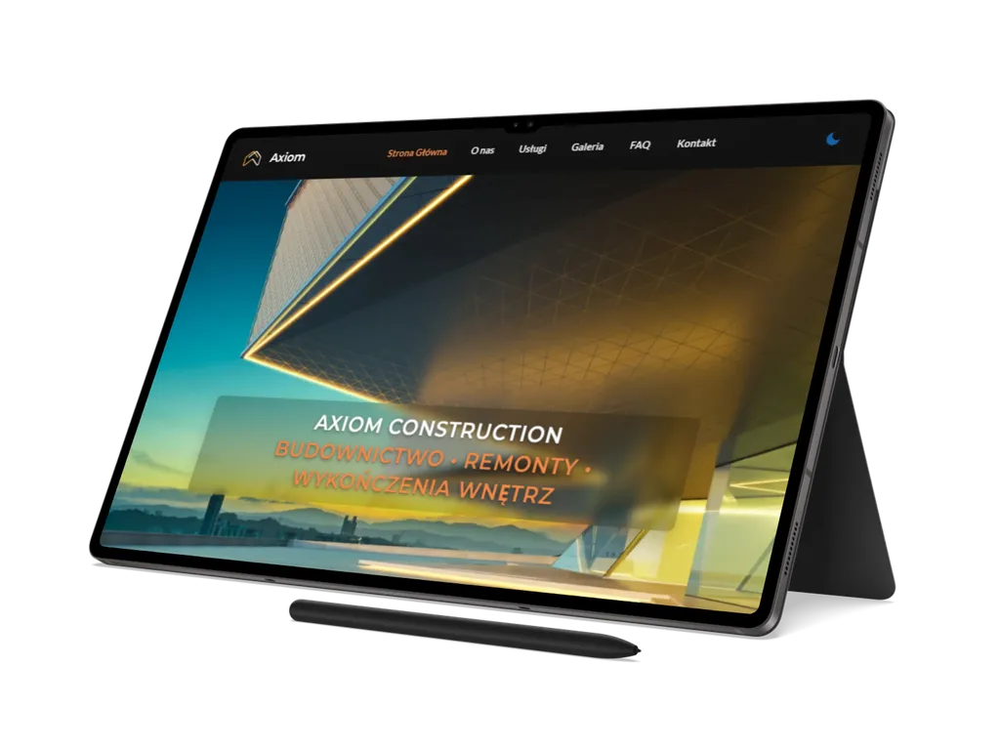

01
Axiom Construction
Wielostronicowy front-end firmy budowlano-remontowej, który łączy ofertę usług, formularz kontaktowy, PWA, SEO i proces publikacji statycznej w spójny serwis firmowy.
Przegląd projektu
Axiom Construction pokazuje kompletny zakres statycznego serwisu budowlano-remontowego: od strony głównej i 6 podstron usług po formularz, dokumenty prawne, offline i PWA.
Projekt został przygotowany jako referencyjna realizacja portfolio, z naciskiem na wielostronicową strukturę, interakcje po stronie klienta, dostępność, SEO, wydajność i przewidywalny release pipeline.
Zakres obejmuje stronę główną, podstrony usług, sekcję dokumentów prawnych, stronę sukcesu formularza, widok offline oraz stronę błędu 404. Dzięki temu Axiom Construction nie jest pojedynczym landingiem, tylko uporządkowaną strukturą dla firmy wykonawczej.
Warstwa interakcji obejmuje mobilną nawigację, przełącznik motywu, przycisk powrotu na górę, lightbox galerii, FAQ, baner cookies oraz formularz kontaktowy z walidacją, honeypotem i integracją Netlify Forms.
StronyBiznesUsługiBudownictwo
Zakres i akcenty
Case study koncentruje się na praktycznych elementach serwisu budowlano-remontowego: strukturze usług, formularzu, interakcjach i technicznym standardzie wdrożenia.
02
Formularz, cookies i UI
03
SEO, PWA i QA
Technologie i standard
Axiom Construction został zbudowany w statycznym stacku HTML, CSS i Vanilla JavaScript, z narzędziami wspierającymi build, PWA, optymalizację obrazów, SEO i audyty jakości.
Warstwa runtime opiera się na HTML5, CSS3 z modułową organizacją przez
@import oraz Vanilla JavaScript ES Modules. Proces produkcyjny korzysta
z cssnano, terser, sharp, builda Service Workera i składania artefaktów
dist.
- moduły JS obejmują core, komponenty, sekcje, utils i dane strukturalne,
- SEO obejmuje canonical, Open Graph, Twitter metadata, JSON-LD i sitemap,
-
QA opiera się na Lighthouse,
@lhci/cli, pa11y i raportach wreports.


Dalszy krok
Zobacz wielostronicowy serwis Axiom Construction albo wróć do pełnego portfolio.
Axiom Construction pokazuje zakres pracy nad statycznym front-endem firmy budowlano-remontowej: od usług, formularza i dokumentów po SEO, dostępność, PWA, QA i przygotowanie projektu do publikacji.